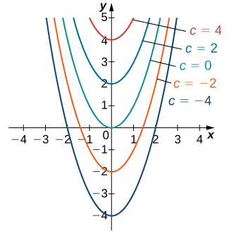
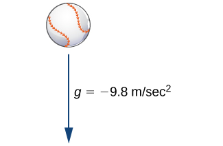
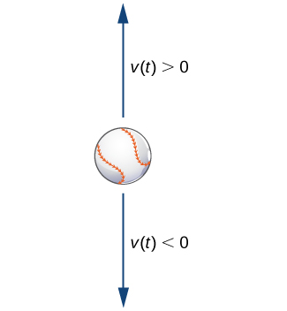

Calculus is the mathematics of change, and rates of change are expressed by derivatives. Thus, one of the most common ways to use calculus is to set up an equation containing an unknown function and its derivative, known as a differential equation. Solving such equations often provides information about how quantities change and frequently provides insight into how and why the changes occur.
Techniques for solving differential equations can take many different forms, including direct solution, use of graphs, or computer calculations. We introduce the main ideas in this chapter and describe them in a little more detail later in the course. In this section we study what differential equations are, how to verify their solutions, some methods that are used for solving them, and some examples of common and useful equations.
General Differential Equations
Consider the equation which is an example of a differential equation because it includes a derivative. There is a relationship between the variables and is an unknown function of Furthermore, the left-hand side of the equation is the derivative of Therefore we can interpret this equation as follows: Start with some function and take its derivative. The answer must be equal to What function has a derivative that is equal to One such function is so this function is considered a solution to a differential equation.
Definition
A differential equation is an equation involving an unknown function and one or more of its derivatives. A solution to a differential equation is a function that satisfies the differential equation when and its derivatives are substituted into the equation.
Some examples of differential equations and their solutions appear in the table.
Examples of Differential Equations and Their Solutions
Equation
Solution
Note that a solution to a differential equation is not necessarily unique, primarily because the derivative of a constant is zero. For example, is also a solution to the first differential equation in the table. We will return to this idea a little bit later in this section. For now, let’s focus on what it means for a function to be a solution to a differential equation.
Verifying Solutions of Differential Equations
Verify that the function is a solution to the differential equation
To verify the solution, we first calculate using the chain rule for derivatives. This gives Next we substitute and into the left-hand side of the differential equation:
The resulting expression can be simplified by first distributing to eliminate the parentheses, giving
Combining like terms leads to the expression which is equal to the right-hand side of the differential equation. This result verifies that is a solution of the differential equation.
Verify that is a solution to the differential equation
Hint
First calculate then substitute both and into the left-hand side.
It is convenient to define characteristics of differential equations that make it easier to talk about them and categorize them. The most basic characteristic of a differential equation is its order.
Definition
The order of a differential equation is the highest order of any derivative of the unknown function that appears in the equation.
Identifying the Order of a Differential Equation
What is the order of each of the following differential equations?
The highest derivative in the equation is so the order is
The highest derivative in the equation is so the order is
The highest derivative in the equation is so the order is
What is the order of the following differential equation?
Hint
What is the highest derivative in the equation?
General and Particular Solutions
We already noted that the differential equation has at least two solutions: and The only difference between these two solutions is the last term, which is a constant. What if the last term is a different constant? Will this expression still be a solution to the differential equation? In fact, any function of the form where represents any constant, is a solution as well. The reason is that the derivative of is regardless of the value of It can be shown that any solution of this differential equation must be of the form This is an example of a general solution to a differential equation. A graph of some of these solutions is given in the figure. (Note: in this graph we used even integer values for ranging between and In fact, there is no restriction on the value of it can be an integer or not.)

Family of solutions to the differential equation
In this example, we are free to choose any solution we wish; for example, is a member of the family of solutions to this differential equation. This is called a particular solution to the differential equation. A particular solution can often be uniquely identified if we are given additional information about the problem.
Finding a Particular Solution
Find the particular solution to the differential equation passing through the point
Any function of the form is a solution to this differential equation. To determine the value of we substitute the values and into this equation and solve for
Therefore the particular solution passing through the point is
Find the particular solution to the differential equation
passing through the point given that is a general solution to the differential equation.
Hint
First substitute and into the equation, then solve for
Initial-Value Problems
Usually a given differential equation has an infinite number of solutions, so it is natural to ask which one we want to use. To choose one solution, more information is needed. Some specific information that can be useful is an initial value, which is an ordered pair that is used to find a particular solution.
A differential equation together with one or more initial values is called an initial-value problem. The general rule is that the number of initial values needed for an initial-value problem is equal to the order of the differential equation. For example, if we have the differential equation then is an initial value, and when taken together, these equations form an initial-value problem. The differential equation is second order, so we need two initial values. With initial-value problems of order greater than one, the same value should be used for the independent variable. An example of initial values for this second-order equation would be and These two initial values together with the differential equation form an initial-value problem. These problems are so named because often the independent variable in the unknown function is which represents time. Thus, a value of represents the beginning of the problem.
Verifying a Solution to an Initial-Value Problem
Verify that the function is a solution to the initial-value problem
For a function to satisfy an initial-value problem, it must satisfy both the differential equation and the initial condition. To show that satisfies the differential equation, we start by calculating This gives Next we substitute both and into the left-hand side of the differential equation and simplify:
This is equal to the right-hand side of the differential equation, so solves the differential equation. Next we calculate
This result verifies the initial value. Therefore the given function satisfies the initial-value problem.
Verify that is a solution to the initial-value problem
Hint
First verify that solves the differential equation. Then check the initial value.
In the example, the initial-value problem consisted of two parts. The first part was the differential equation and the second part was the initial value These two equations together formed the initial-value problem.
The same is true in general. An initial-value problem consists of two parts: the differential equation and the initial condition. The differential equation has a family of solutions, and the initial condition determines the value of The family of solutions to the differential equation in the example is given by This family of solutions is shown in the figure, with the particular solution labeled.
A family of solutions to the differential equation The particular solution is labeled.
Solving an Initial-value Problem
Solve the following initial-value problem:
The first step in solving this initial-value problem is to find a general family of solutions. To do this, we find an antiderivative of both sides of the differential equation
namely,
We are able to integrate both sides because the y term appears by itself. Notice that there are two integration constants: and Solving the equation for gives
Because and are both constants, is also a constant. We can therefore define which leads to the equation
Next we determine the value of To do this, we substitute and into the equation and solve for
Now we substitute the value into the equation. The solution to the initial-value problem is
Analysis
The difference between a general solution and a particular solution is that a general solution involves a family of functions, either explicitly or implicitly defined, of the independent variable. The initial value or values determine which particular solution in the family of solutions satisfies the desired conditions.
Solve the initial-value problem
Hint
First take the antiderivative of both sides of the differential equation. Then substitute and into the resulting equation and solve for
In physics and engineering applications, we often consider the forces acting upon an object, and use this information to understand the resulting motion that may occur. For example, if we start with an object at Earth’s surface, the primary force acting upon that object is gravity. Physicists and engineers can use this information, along with Newton’s second law of motion (in equation form where represents force, represents mass, and represents acceleration), to derive an equation that can be solved.

For a baseball falling in air, the only force acting on it is gravity (neglecting air resistance).
In the figure we assume that the only force acting on a baseball is the force of gravity. This assumption ignores air resistance. (The force due to air resistance is considered in a later discussion.) The acceleration due to gravity at Earth’s surface, is approximately We introduce a frame of reference, where Earth’s surface is at a height of 0 meters. Let represent the velocity of the object in meters per second. If the ball is rising, and if the ball is falling (the figure).

Possible velocities for the rising/falling baseball.
Our goal is to solve for the velocity at any time To do this, we set up an initial-value problem. Suppose the mass of the ball is where is measured in kilograms. We use Newton’s second law, which states that the force acting on an object is equal to its mass times its acceleration Acceleration is the derivative of velocity, so Therefore the force acting on the baseball is given by However, this force must be equal to the force of gravity acting on the object, which (again using Newton’s second law) is given by since this force acts in a downward direction. Therefore we obtain the equation which becomes Dividing both sides of the equation by gives the equation
Notice that this differential equation remains the same regardless of the mass of the object.
We now need an initial value. Because we are solving for velocity, it makes sense in the context of the problem to assume that we know the initial velocity, or the velocity at time This is denoted by
Velocity of a Moving Baseball
A baseball is thrown upward from a height of meters above Earth’s surface with an initial velocity of and the only force acting on it is gravity. The ball has a mass of .
Find the velocity of the baseball at time
What is its velocity after seconds?
From the preceding discussion, the differential equation that applies in this situation is
where The initial condition is where Therefore the initial-value problem is
The first step in solving this initial-value problem is to take the antiderivative of both sides of the differential equation. This gives
The next step is to solve for To do this, substitute and
Therefore and the velocity function is given by
To find the velocity after seconds, substitute into
The units of velocity are meters per second. Since the answer is negative, the object is falling at a speed of
Suppose a rock falls from rest from a height of meters and the only force acting on it is gravity. Find an equation for the velocity as a function of time, measured in meters per second.
Hint
What is the initial velocity of the rock? Use this with the differential equation in the example to form an initial-value problem, then solve for
A natural question to ask after solving this type of problem is how high the object will be above Earth’s surface at a given point in time. Let denote the height above Earth’s surface of the object, measured in meters. Because velocity is the derivative of position (in this case height), this assumption gives the equation An initial value is necessary; in this case the initial height of the object works well. Let the initial height be given by the equation Together these assumptions give the initial-value problem
If the velocity function is known, then it is possible to solve for the position function as well.
Height of a Moving Baseball
A baseball is thrown upward from a height of meters above Earth’s surface with an initial velocity of and the only force acting on it is gravity. The ball has a mass of kilogram.
Find the position of the baseball at time
What is its height after seconds?
We already know the velocity function for this problem is The initial height of the baseball is meters, so Therefore the initial-value problem for this example is
To solve the initial-value problem, we first find the antiderivatives:
Next we substitute and solve for
Therefore the position function is
The height of the baseball after is given by
Therefore the baseball is meters above Earth’s surface after seconds. It is worth noting that the mass of the ball cancelled out completely in the process of solving the problem.
Key Concepts
A differential equation is an equation involving a function and one or more of its derivatives. A solution is a function that satisfies the differential equation when and its derivatives are substituted into the equation.
The order of a differential equation is the highest order of any derivative of the unknown function that appears in the equation.
A differential equation coupled with an initial value is called an initial-value problem. To solve an initial-value problem, first find the general solution to the differential equation, then determine the value of the constant. Initial-value problems have many applications in science and engineering.
Determine the order of the following differential equations.
Verify that the following functions are solutions to the given differential equation.
solves
solves
solves
solves
solves
solves
solves
solves
solves
solves
Verify the following general solutions and find the particular solution.
Find the particular solution to the differential equation that passes through given that is a general solution.
Find the particular solution to the differential equation that passes through given that is a general solution.
Find the particular solution to the differential equation that passes through given that is a general solution.
Find the particular solution to the differential equation that passes through given that is a general solution.
Find the particular solution to the differential equation that passes through given that is a general solution.
Find the particular solution to the differential equation that passes through given that is a general solution.
Find the particular solution to the differential equation that passes through given that is a general solution.
Find the particular solution to the differential equation that passes through given that is a general solution.
Find the particular solution to the differential equation that passes through given that is a general solution.
Find the particular solution to the differential equation that passes through given that is a general solution.
For the following problems, find the general solution to the differential equation.
Solve the following initial-value problems starting from and Draw both solutions on the same graph.
Solve the following initial-value problems starting from At what time does increase to or drop to
never
Recall that a family of solutions includes solutions to a differential equation that differ by a constant. For the following problems, use your calculator to graph a family of solutions to the given differential equation. Use initial conditions from to increasing by Is there some critical point where the behavior of the solution begins to change?
[T]
[T]
Solution changes from increasing to decreasing at
[T]
[T] (Hint: is the general solution)
Solution changes from increasing to decreasing at
[T]
Find the general solution to describe the velocity of a ball of mass that is thrown upward at a rate ft/sec.
In the preceding problem, if the initial velocity of the ball thrown into the air is ft/s, write the particular solution to the velocity of the ball. Solve to find the time when the ball hits the ground.
You throw two objects with differing masses and upward into the air with the same initial velocity ft/s. What is the difference in their velocity after second?
ft/s
[T] You throw a ball of mass kilogram upward with a velocity of m/s on Mars, where the acceleration of gravity is m/s2. Use your calculator to approximate how much longer the ball is in the air on Mars than on Earth, where .
[T] For the previous problem, use your calculator to approximate how much higher the ball went on Mars, where .
meters
[T] A car on the freeway accelerates according to where is measured in hours. Set up and solve the differential equation to determine the velocity of the car if it has an initial speed of mph. After minutes of driving, what is the driver’s velocity?
[T] For the car in the preceding problem, find the expression for the distance the car has traveled in time assuming an initial distance of How long does it take the car to travel miles? Round your answer to hours and minutes.
hours minute
[T] For the previous problem, find the total distance traveled in the first hour.
Substitute into to find a particular solution.
Substitute into to find a particular solution.
Substitute into to find a particular solution.
Substitute into to find a particular solution.
Solve with the initial condition and solve with the same initial condition. As approaches what do you notice?
and
Key terms
differential equation an equation involving a function and one or more of its derivatives
general solution (or family of solutions) the entire set of solutions to a given differential equation
initial value(s) a value or set of values that a solution of a differential equation satisfies for a fixed value of the independent variable
initial velocity the velocity at time
initial-value problem a differential equation together with an initial value or values
order of a differential equation the highest order of any derivative of the unknown function that appears in the equation
particular solution member of a family of solutions to a differential equation that satisfies a particular initial condition
solution to a differential equation a function that satisfies a given differential equation
![A graph of a family of solutions to the differential equation y’ + 2 y = 3 e ^ t, which are of the form y = 2 e ^ (-2 t) + C e ^ t. The versions with C = 1, 0.5, and -0.2 are shown, among others not labeled. For all values of C, the function increases rapidly for t < 0 as t goes to negative infinity. For C > 0, the function changes direction and increases in a gentle curve as t goes to infinity. Larger values of C have a tighter curve closer to the y axis and at a higher y value. For C = 0, the function goes to 0 as t goes to infinity. For C < 0, the function continues to decrease as t goes to infinity.](CNX_Calc_Figure_08_01_002.jpg)